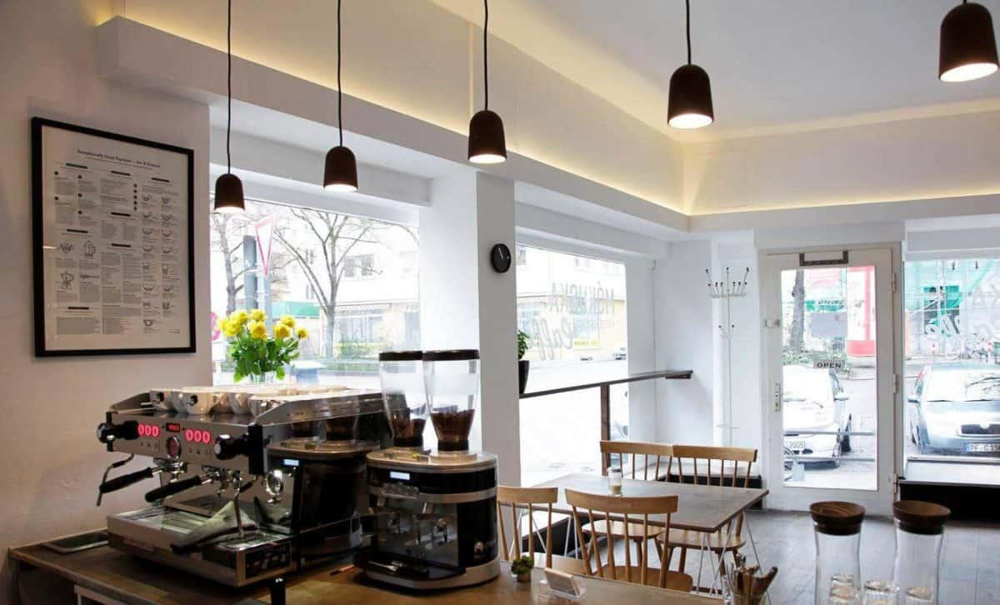
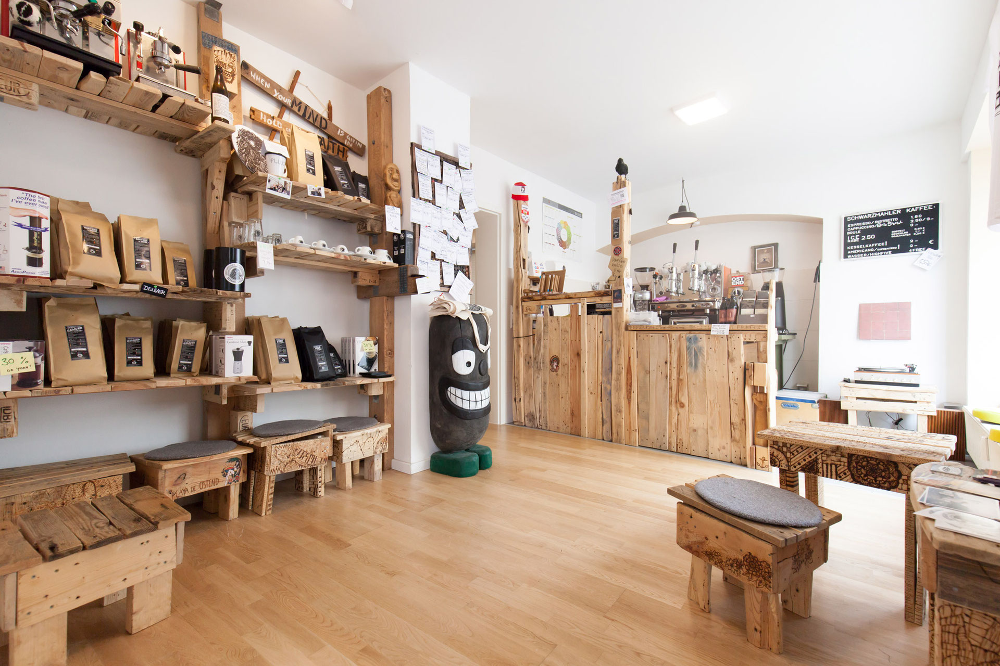

In the Stuttgart-West neighborhood, just a few blocks from the historic Feuersee Church,
Mókuska Caffè is a one-stop shop for all of your specialty coffee desires.
All of Mókuska's coffee is directly traceably traded, and roasted in-house on Mondays
when they’re closed so that their coffee is always fresh. Stefan Dachale, the owner
and roaster, considers himself a “green bean tuner”, a reflection of his obsession
with extracting just the right profile by subtly adjusting his roasts on the fly –
like the pit crew of a Formula 1 race team. After 20 years in the business,
Stefan is a seasoned veteran in specialty coffee.

Mokuska Café
Mókuska Caffè operates with eco-friendliness in mind as well. Besides ensuring their
coffee is purchased from sustainable farms, the shop is run on green electricity and
gas, and all online orders are shipped via DHL Go Green.
Across town in Stuttgart East (a.k.a. the Ost End), a small specialty shop is
bending the rules for coffee shops. First and foremost, you’ll notice the unusual
hours of operation. Schwarzmahler is only open 2-3 times a week, in the evenings,
and for only 3 hours at a time. So plan accordingly.
But there is a method to this madness. Heiko Blocher, the founder and owner,
established Schwarzmahler as a part-time venture to follow his passion for coffee.
As for the coffee, Heiko is a lover of dark roasts, and his menu is almost exclusively
espresso-based drinks, including his own take on a cortado that he calls a
“Kesselkaffee” or “Cauldron Coffee”, named after the city’s unique geographic location.
All the shots are pulled on an Italian, hand-made Bosco lever machine that Heiko has
perfected the use of over time. He also likes to brag about the machine, because it’s
1 of only 3 like it in all of Germany.

Schwarzmahler Cafe
Schwarzmahler roasts its coffee off-site, and offers 4-5 blends in store, all fairly dark,
but never burned. All of the coffee is fairly and directly traded, and available in
whole beans in-store and online.